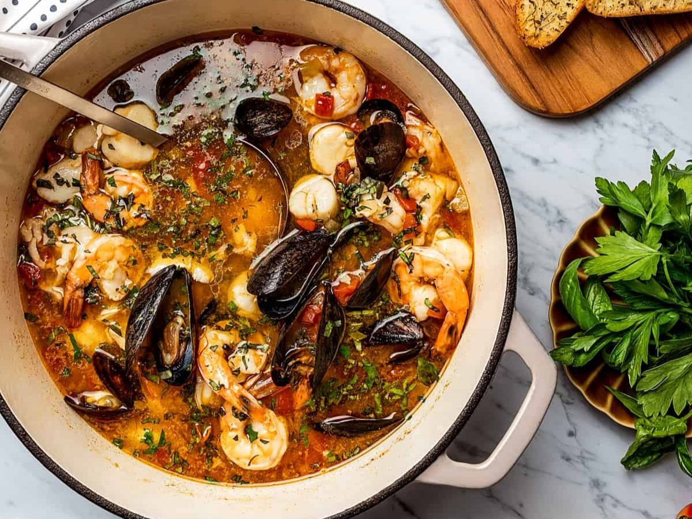
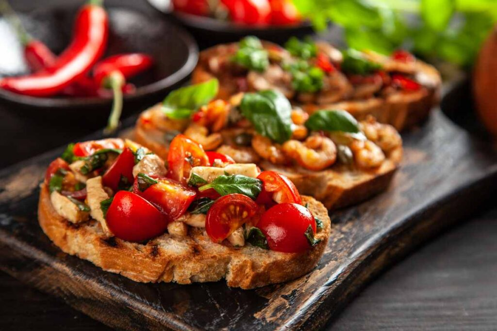
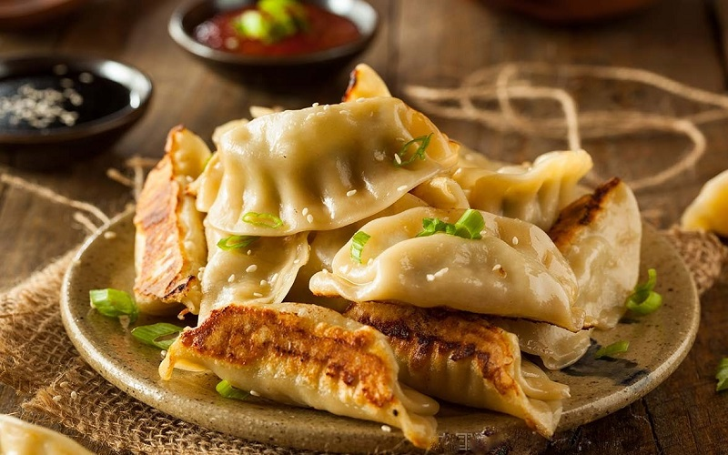
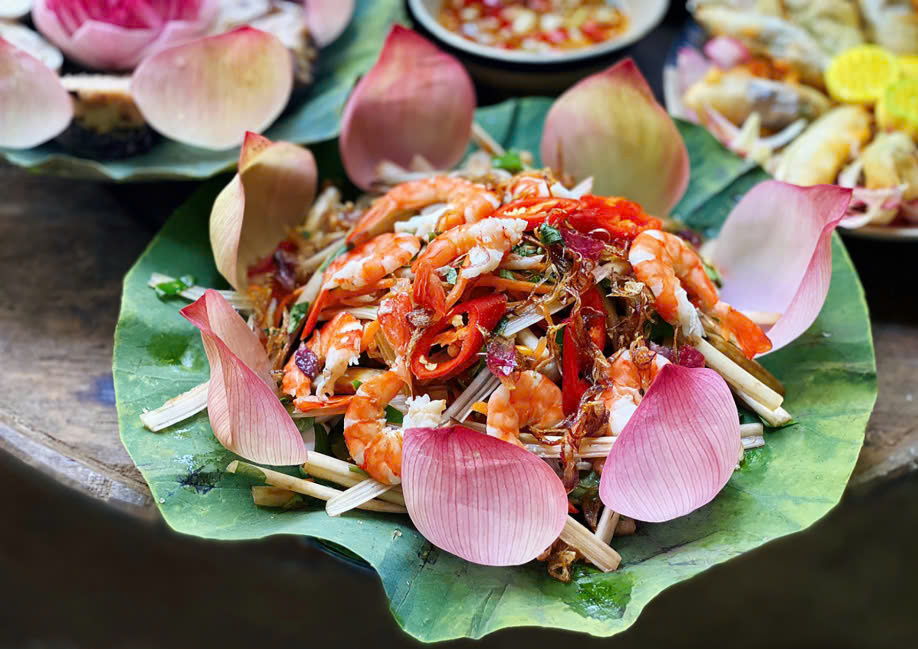

Bài viết mới

Khai Vị Đặc Sắc
Soup Cà Chua Hải Sản (Âu)
Súp cà chua hải sản là sự hòa quyện tuyệt vời giữa vị chua ngọt thanh mát của cà chua cùng hải sản tươi ngon như tôm, cá, sò, mực. Món ăn mang đậm hơi thở của các nền ẩm thực Âu Mỹ như Pháp (bisque), Ý–Mỹ (cioppino) hay Mỹ Latin (caldo de siete mares). Thưởng thức món soup này, bạn như được lạc bước giữa những bờ biển Địa Trung Hải đầy nắng.
Bruschetta (Món Ý)
Bruschetta – món khai vị tinh tế nổi tiếng của Ý, ra đời từ vùng Lazio và Toscana. Chỉ với lát bánh mì nướng giòn rụm chà tỏi, rưới dầu ô liu nguyên chất, phủ cà chua tươi, lá húng quế, chút muối và tiêu, món ăn mộc mạc nhưng cuốn hút thực khách bởi hương vị tươi mới và nhẹ nhàng.
Há Cảo Nhật Bản (Gyoza)
Gyoza – phiên bản há cảo Nhật Bản được biến tấu từ jiaozi Trung Hoa, nhưng mỏng nhẹ hơn với phần nhân thịt đậm đà, chiên áp chảo giòn rụm bên ngoài, mềm ẩm bên trong. Món ăn phổ biến trong các quán ramen, izakaya và là món “must try” khi ghé quán Nhật!
Gỏi Ngó Sen (Món Việt)
Gỏi ngó sen – món khai vị dân dã, thanh mát, đậm chất Nam Bộ. Vị giòn thanh của ngó sen non kết hợp cùng tôm sú, thịt ba chỉ luộc, rau thơm và nước mắm pha chua ngọt tạo nên hương vị hài hòa, giải nhiệt cực kỳ thích hợp cho những ngày hè oi bức.